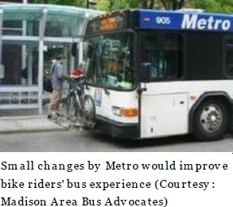

Bicyclists comprise a significant proportion of Metro Transits clientele and we can make that even better. Natural allies, both bicycling and riding public transit are people-oriented transportation modes that are kind to the pocketbook, leave a small carbon footprint, enhance our health, and make our community safer. They are important elements of a multimodal transportation system.
Furthermore, bicycling is enabling. Consider the fact that the Madison Area Transportation Planning Board (an MPO) holds its main meetings and public hearings at the Madison Water Utility
Building on Olin Ave. The bus that can take one there, the #13, does not even go downtown where one can transfer,
only travelling the south side of Madison up to Park St. and University Ave. once an hour in the evenings and on the
weekends. There is not enough time in a work day for a transit-dependent person to travel to a Public Hearing at the
Water Utility Building. But given favorable weather conditions, travelling there by bicycle can make sense, enabling
an individual to participate in the democratic process.
Or consider the fact that more and more state and county office buildings in Madison are being located out of the reach of the transit-dependent citizenry but not out of reach of bicyclists. Favorite examples are the regional headquarters of the State department of transportation on Wright St. and the Countys office building on Fen Oak Dr.
Finally, consider the situation of someone who works downtown but lives on the edge of town where the closest bus stop is miles away and the bus that stops there only runs during peak periods (roughly 6-9 a.m. and 3-6 p.m.). How could that person stay downtown after work for dinner or go home in the middle of the day if she or he depended solely on the bus? With a basic bike, not only is it possible to ride to or from the closest bus stop in about five minutes but it is also possible to bike further than the nearest stop to catch a different bus that ran all day or more frequently.
Riding transit has its benefits too of course. For instance, buses run year-round, sometimes on roads kept clear by
plows even when the snow is blocking a nearby bicycle-way. Buses are warm and dry in inclement weather. When
ridden to work, a bus rider can arrive fresh and on time, not sweaty or late. Bus riders can carry a reasonable number
of packages, grocery bags or other items that could overwhelm a bicycle. Finally, buses can be faster than bicycles
over a long distance, and they can go farther than a bicyclist might consider reasonable, especially for a daily
commute.
The ideal, then, can often be to combine biking with transit. For instance, someone can take the bus to work to avoid
arriving late or sweaty, but can ride a bike home without worrying about time or appearance. On my ride home, we
often pick up a bicyclist who biked to the grocery store but returns home too laden with bags to bike the return trip.
Rather, he puts his bike on the rack attached to the front of the bus.
That is, Metro accommodates bicycles by equipping all its buses with bike racks. Although some places have buses that
accommodate bicycles inside as well as having an outside rack limited to two or three bicycles, Metro does not allow
bicycles inside the bus because it deems that unsafe.
Whether it really is unsafe or not, it should not be necessary to always take ones bicycle along on the bus. On days
that start out clear but turn rainy in the afternoon, a bicyclist can find her/himself stranded at work with the bicycle
because the buss bike rack is already full. Yet it is not safe to leave the bicycle at a bus stop or one of the transfer
points. To do so would leave the bicycle vulnerable to the vagaries of nature -- rain, snow, dirt, wind, leaves, etc. --
and the malfeasance of humans -- theft, vandalism, tripping, leaning, etc. The bike racks at the transfer points are
exposed (not even covered from the rain or snow) and there are no bike lockers. Bicyclists also need street and path networks that allow safe travel to and from the bus stop.
An inexpensive bike that could be used for just a few miles can be a great solution to the "last mile" transit problem (living too far from a bus stop to walk). But people still want to know that both their inexpensive bicycle and the bicycle route to
the bus stop are safe. They can and should be. This is Madison after all.

 Madison Area Bus Advocates
Madison Area Bus Advocates